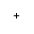

Zur Bedienung der Steuerung und der Bearbeitungsmaschine stehen folgende Tasten und Tastenkombinationen zur Verfügung.
Taste | Funktion |
| | | | | | |
 | | | | | <ALARM CANCEL> Löscht Alarme und Meldungen, die mit diesem Symbol gekennzeichnet sind.
|
 | | | | | <CHANNEL> Schaltet bei mehreren Kanälen weiter.
|
 | | | | | <HELP> Ruft die kontextsensitive Online-Hilfe zum angewählten Fenster auf.
|
 | | | | | <NEXT WINDOW> * Schaltet zwischen Fenstern hin und her. Wechselt bei Mehrkanalansicht bzw. bei Mehrkanalfunktionalität innerhalb einer Kanalspalte zwischen oberem und unterem Fenster. Wählt in Auswahllisten und in Auswahlfeldern den ersten Eintrag. Bewegt den Cursor an den Beginn eines Textes
* auf USB-Tastaturen verwenden Sie die Taste <Home> bzw. <Pos 1> |
| |  | | | | <NEXT WINDOW> + <SHIFT> Wählt in Auswahllisten und in Auswahlfeldern den ersten Eintrag. Bewegt den Cursor an den Beginn eines Textes. Markiert eine zusammenhängende Auswahl von der aktuellen Cursor-Position bis zur Zielposition. Markiert eine zusammenhängende Auswahl von der aktuellen Cursor-Position bis zum Anfang eines Programmblocks.
|
| | |  | | | <NEXT WINDOW> + <ALT> Bewegt den Cursor zum ersten Objekt. Bewegt den Cursor in die erste Spalte einer Tabellenzeile. Bewegt den Cursor an den Beginn eines Programmsatzes.
|
| | |  | | | <NEXT WINDOW> + <CTRL> |
| | | | | | <NEXT WINDOW> + <CTRL> + <SHIFT> Bewegt den Cursor an den Anfang eines Programms. Bewegt den Cursor in die erste Zeile der aktuellen Spalte. Markiert eine zusammenhängende Auswahl von der aktuellen Cursor-Position bis zur Zielposition. Markiert eine zusammenhängende Auswahl von der aktuellen Cursor-Position bis zum Anfang des Programms.
|
| | | | | | <PAGE UP> Blättert in einem Fenster um eine Seite nach oben.
|
| | | | | | <PAGE UP> + <SHIFT> Markiert im Programm-Manager und im Programmeditor von der Cursorposition aus Verzeichnisse bzw. Programmsätze bis zum Anfang des Fensters.
|
| | | | | | <PAGE UP> + <CTRL> Positioniert den Cursor auf die oberste Zeile eines Fensters.
|
| | | | | | <PAGE DOWN> Blättert in einem Fenster um eine Seite nach unten.
|
| | | | | | <PAGE DOWN> + <SHIFT> Markiert im Programm-Manager und im Programmeditor von der Cursorposition aus Verzeichnisse bzw. Programmsätze bis zum Ende des Fensters.
|
| | | | | | <PAGE DOWN> + <CTRL> Positioniert den Cursor auf die unterste Zeile eines Fensters.
|
 | | | | | <Cursor rechts> |
| | | | | | <Cursor rechts> + <CTRL> |
 | | | | | <Cursor links> Editierfeld Schließt ein Verzeichnis oder Programm (z. B. Zyklus) im Programmeditor. Haben Sie Änderungen vorgenommen, werden diese übernommen. Navigation Bewegt den Cursor um ein Zeichen weiter nach links.
|
| | | | | | <Cursor links> + <CTRL> |
 | | | | | <Cursor oben> |
| | | | | | <Cursor oben> + <CTRL> |
| | | | | | <Cursor oben> + <SHIFT> Markiert im Programm-Manager und im Programmeditor eine zusammenhängende Auswahl von Verzeichnissen bzw. Programmsätzen.
|
 | | | | | <Cursor unten> |
| | | | | | <Cursor unten> + <CTRL> |
| | | | | | <Cursor unten> + <SHIFT> Markiert im Programm-Manager und im Programmeditor eine zusammenhängende Auswahl von Verzeichnissen bzw. Programmsätzen.
|
 | | | | | <SELECT> Schaltet in Auswahllisten und in Auswahlfeldern zwischen mehreren vorgegebenen Möglichkeiten weiter. Aktiviert Kontrollkästchen. Wählt im Programmeditor und im Programm-Manager einen Programmsatz bzw. ein Programm aus.
|
| | | | | | <SELECT> + <CTRL> Schaltet bei der Markierung von Tabellenzeilen zwischen selektiert und nicht selektiert. |
| | | | | | <SELECT> + <SHIFT> Wählt in Auswahllisten und in Auswahlfeldern den vorhergehenden Eintrag bzw. den letzten Eintrag. |
 | | | | | <END> Bewegt den Cursor auf das letzte Eingabefeld in einem Fenster, an das Ende einer Tabelle oder eines Programmblocks. Wählt in Auswahllisten und in Auswahlfeldern den letzten Eintrag. |
| | | | | | <END> + <SHIFT> Bewegt den Cursor zum letzten Eintrag. Markiert eine zusammenhängende Auswahl von der Cursor-Position bis zum Ende eines Programmblocks.
|
| | | | | | <END> + <CTRL> Bewegt den Cursor zum letzten Eintrag in die letzte Zeile der aktuellen Spalte oder an das Ende eines Programms.
|
| | | | | | <END> + <CTRL> + <SHIFT> Bewegt den Cursor zum letzten Eintrag in die letzte Zeile der aktuellen Spalte oder an das Ende eines Programms. Markiert eine zusammenhängende Auswahl von der Cursor-Position bis zum Ende eines Programmblocks
|
 | | | | | <BACKSPACE> |
| | | | | | <BACKSPACE> + <CTRL> |
 | | | | | <TAB> |
| | | | | | <TAB> + <SHIFT> |
| | | | | | <TAB> + <CTRL> |
| | | | | | <TAB> + <CTRL> + <SHIFT> |
| | |  | | | <CTRL> + <A> Wählt alle Einträge im aktuellen Fenster aus (nur im Programmeditor und Programm-Manager).
|
| | | | | | <CTRL> + <C> Kopiert den markierten Inhalt.
|
| | |  | | | <CTRL> + <E> Ruft die Funktion "Ctrl Energy" auf.
|
| | | | | | <CTRL> + <F> Öffnet in Maschinendaten- und Settingdatenlisten, beim Laden und Speichern im MDA-Editor sowie im Programm-Manager und in den Systemdaten den Such-Dialog. |
| | | | | | <CTRL> + <G> |
| | | | | | <CTRL> + <I> Berechnet die Programmlaufzeit bis zu bzw. von dem markierten Satz/Block und stellt die Zeiten grafisch dar. |
| | | | | | <CTRL> + <L> Wechselt die aktuelle Bedienoberfläche nacheinander durch alle installierten Sprachen. |
| | | | | | <CTRL> + <SHIFT> + <L> Wechselt die aktuelle Bedienoberfläche durch alle installierten Sprachen in umgekehrter Reihenfolge.
|
| | | | | | <CTRL> + <M> Wählt während der Simulation den maximalen Vorschub von 120%. |
| | |  | | | <CTRL> + <P> Erstellt von der aktuellen Bedienoberfläche einen Bildschirmabzug und speichert ihn als Datei.
|
| | |  | | | <CTRL> + <S> Schaltet in der Simulation den Einzelsatz ein bzw. aus.
|
| | |  | | | <CTRL> + <V> |
| | |  | | | <CTRL> + <X> Schneidet markierten Text aus. Der Text befindet sich in der Zwischenablage.
|
| | |  | | | <CTRL> + <Y> Reaktiviert zurückgesetzte Änderungen (nur im Programmeditor).
|
| | | | | | <CTRL> + <Z> Macht die letzte Aktion rückgängig (nur im Programmeditor).
|
| | | | |  | <CTRL> + <ALT> + <D> Sichert die Protokolldateien auf den USB-FlashDrive. Wenn kein USB-FlashDrive gesteckt ist, werden die Dateien in den Herstellerbereich der Speicherkarte gesichert. |
| | | | | | <SHIFT> + <ALT> + <D> Sichert die Protokolldateien auf den USB-FlashDrive. Wenn kein USB-FlashDrive gesteckt ist, werden die Dateien in den Herstellerbereich der Speicherkarte gesichert.
|
| | | | | | <SHIFT> + <ALT> + <T> Startet "HMI Trace".
|
| | | | | | <SHIFT> + <ALT> + <T> Beendet "HMI Trace".
|
| | | | | | <ALT> + <S> Öffnet den Editor zur Eingabe asiatischer Schriftzeichen.
|
| | | | | | <ALT> + <Cursor oben> Verschiebt im Editor Blockanfang bzw. Blockende nach oben. |
| | | | | | <ALT> + <Cursor unten> Verschiebt im Editor Blockanfang bzw. Blockende nach unten. |
 | | | | | <DEL> |
| | | | | | <DEL> + <CTRL> |
 | | | | | <Leertaste> |
 | | | | | <Plus> Öffnet ein Verzeichnis, das Elemente enthält. Vergrößert die grafische Ansicht bei Simulation und Trace-Aufzeichnungen.
|
 | | | | | <Minus> Schließt ein Verzeichnis, das Elemente enthält. Verkleinert die grafische Ansicht bei Simulation und Trace-Aufzeichnungen.
|
 | | | | | <Istgleich> Öffnet den Taschenrechner in Eingabefeldern. |
| | | | | | <Sternchen> Öffnet ein Verzeichnis mit sämtlichen Unterverzeichnissen. |
| | | | | | <Tilde> Ändert das Vorzeichen einer Zahl zwischen Plus und Minus. |
 | | | | | <INSERT> Öffnet ein Editierfeld im Einfügemodus. Drücken Sie die Taste erneut, verlassen Sie das Feld und die Eingaben werden rückgängig gemacht. Öffnet ein Auswahlfeld und zeigt die Auswahlmöglichkeiten an. Fügt im Arbeitsschrittprogramm eine leere Zeile für G-Code ein. Wechselt im Doppeleditor bzw. in der Mehrkanalansicht aus dem Editiermodus in den Bedienmodus. Durch nochmaliges Drücken der Taste gelangt man wieder in den Editiermodus.
|
| | + | | | | <INSERT> + <SHIFT> Schaltet bei G-Code Programmierung für einen Zyklenaufruf den Editier-Modus ein bzw. aus.
|
 | | | | | <INPUT> Schließt die Eingabe eines Werts im Eingabefeld ab. Öffnet ein Verzeichnis oder ein Programm. Fügt einen leeren Programmblock ein, wenn der Cursor am Ende eines Programmblocks positioniert ist. Fügt ein Zeichen zur Markierung einer neuen Zeile wird eingefügt und der Programmblock wird in 2 Teile geteilt. Fügt im G-Code nach dem Programmsatz eine neue Zeile ein. Fügt im Arbeitsschritt-Programm eine neue Zeile für G-Code e Wechselt im Doppeleditor bzw. in der Mehrkanalansicht aus dem Editiermodus in den Bedienmodus. Durch nochmaliges Drücken gelangt man wieder in den Editiermodus.
|
| | | | | | Menüfortschalt-Taste Schaltet in die erweiterte horizontale Softkey-Leiste weiter.
|
 | | | | | Menürückschalt-Taste Schaltet in das übergeordnete Menü zurück.
|
| | | | | | <MACHINE> Ruft den Bedienbereich "Maschine" auf.
|
 | | | | | <MENU SELECT> Ruft das Grundmenü zur Anwahl der Bedienbereiche auf.
|